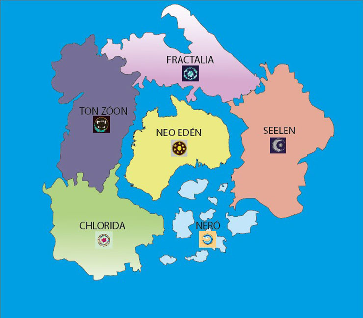

Mundo

Fractalia
Los primeros Fractalianos migraron hacia el norte del continente, al llegar a esta región se encontraron con montañas rocosas, grandes riscos, nevados, algunos acantilados acompañados de fuertes ventiscas y temperaturas bajas. Los Fractalianos gracias a su alteración genética pudieron tener un cuerpo muy resistente para hacer minería y encontrar piedras preciosas. Al pasar el tiempo Fractalia se iba llenando de minas por todas partes, donde la mayoría de ellas se volvían casas subterráneas, o su material se usaba para construir grandes casas en la superficie, conformando lo que es en la actualidad la zona urbana de Fractalia.
Ton Zoón
Los primeros Panidas corrieron con suerte ya que llegaron a una parte del continente donde el grado de contaminación y presencia de gases era bajo, lo que permitió la proliferación de la fauna y flora, tierras fértiles y agua potable en los primeros cien años, pero aun, en la actualidad el hábitat no se encuentra 100% libre de contaminación y gases tóxicos. Gracias a sus habilidades causadas por la alteración genética, Panidas pudieron adoptar algunas características físicas o instintivas de algún animal, por eso, lograron convivir con muchas especies de animales, y para mantener la paz con el ambiente optaron por no obstruir o modificar drásticamente su entorno natural, imitando la vida de ancestros como los indios. La mayoría de su población se divide por pequeñas aldeas, casi desapercibidas debido a la alta concentración de monte y de árboles, e incluso muchos habitan en casas viejas abandonadas cubiertas de moho. El clima de esta región en su mayoría es cálido, a veces muy caluroso.
Chlorida
Aquí el ambiente en su principio era muy hostil, aunque rodeados de valles, praderas y algunas montañas, la vegetación era escasa, había muchos suelos secos y erosionados, los únicos que reinaban eran los insectos; con el tiempo los suelos se fueron recuperando y la vegetación fue tomando poder, convirtiéndose en un hábitat muy selvático, sin embargo la contaminación y los gases tóxicos seguían presentes. Esta civilización, con el tiempo se fue haciendo muy organizada y cada vez más indetectable, ya que ellos viven muy escondidos entre el bosque, camuflados entre la flora, pero se sabe que tienen una gran ciudad escondida hacia lo profundo de la selva. El clima tropical ha sido crucial para la reproducción de muchas especies de plantas pero también estas a su vez han podido evolucionar y adaptarse a los gases tóxicos y suelos contaminados.
Neró
En sus primeros 100 años de estadía en el hábitat, les era muy difícil sobrevivir ya que habían muchos huracanes, ventiscas, lluvia ácida y agua contaminada, pero gracias a que sus cuerpos tenían branquias, les permitió moverse en él mar y pescar peces bajo él para subsistir, con el tiempo evolucionaron adaptándose a vivir bajo el mar y sabían que era mejor estar adentro que afuera . Actualmente este continente sigue teniendo fuertes tormentas y grandes tsunamis, por lo que es un lugar casi inhabitable por los humanos corrientes; a simple vista son pequeñas islas solitarias, pero debajo de sus aguas viven los Neródianos, donde tienen sus casas dentro de pequeñas cuevas y en algunas zonas planas han construido pequeños edificios de piedras bajo el mar; con el tiempo se hicieron expertos nadadores, por lo que se aventuraron a conocer más el mar y a conquistar muchas islas
Seelen
Estas personas tuvieron que ser muy inteligentes y movilizarse hacia la costa, en zonas donde hubiese vegetación y les permitiera pescar en el mar. Con el tiempo el moho se apoderó de la mayoría de las ciudades y de los rascacielos, poco a poco la contaminación se fue haciendo menos densa y los Safaeram se iban adaptando a ese ambiente ya que también su cuerpo soportaba más esos gases tóxicos. Muchos edificios fueron restablecidos por los Safaeram, pero esta región sigue siendo uno de los lugares más inhabitables y que lo que más hay son ciudades fantasmas recubiertas de color verde por el moho y de naranja por los gases contaminantes.
Neo Edén
Neo Edén se ubica en el centro del continente,es decir en una gran isla, es la región más antigua, la única en guardar registros del pasado de la historia humana, es una región que desde principio hasta hoy ha sido el lugar de la tecnología, de la innovación, la ciudad del futuro; allí los últimos humanos de la tierra decidieron resguardarse y protegerse de todos los gases contaminantes y las catástrofes naturales. Neo Eden es ahora una ciudad burbuja, ya que hay una gran barrera que cubre toda la región, esta barrera los protege de todo peligro de afuera. Dentro de la gran ciudad se observa un entorno muy tecnológico, donde el humano y la tecnología conviven juntos, y muchos robots están al servicio de ellos; aquí, la poca vegetación que hay se encuentra dentro de invernaderos y el agua es extraída del mar y procesada para ser potable.